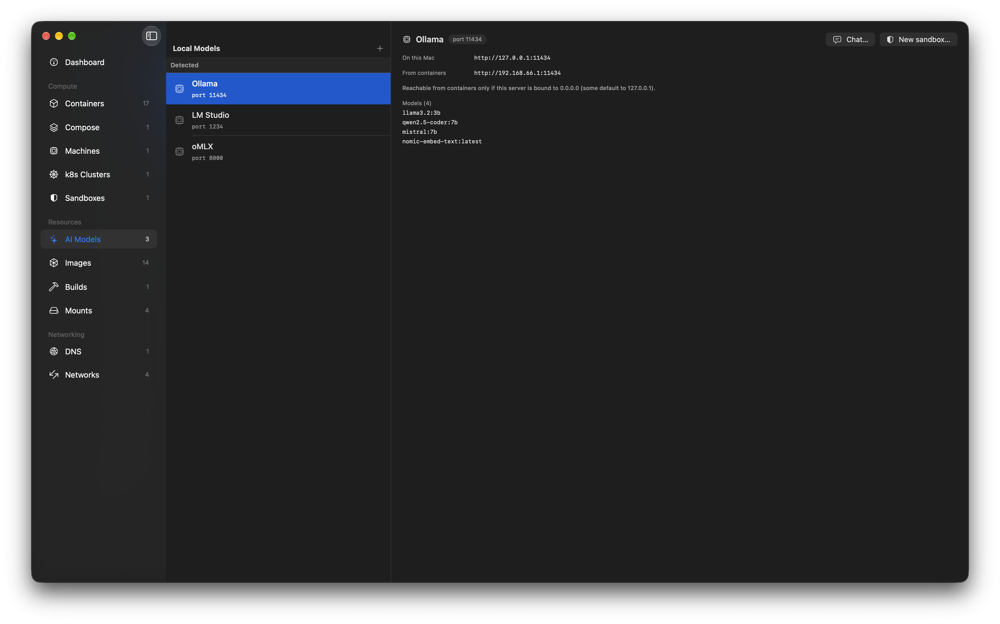
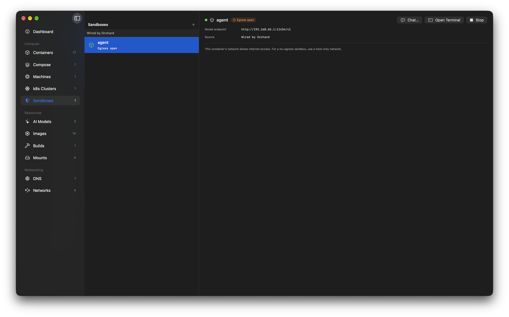

Guide
Local AI & Sandboxes
Run local models on Apple silicon with MLX, and wire them into containers from Orchard - a Model Runner for the Apple-native stack, with a real, honest isolation story.
container 1.1+ · macOS 26 · Apple silicon · MLXWhat this is
Apple's container runs each workload in its own lightweight Linux VM. That's great for isolation, but those guests have no GPU access - so model inference has to run on the host. Meanwhile every developer building an AI app or agent on this stack ends up hand-wiring the plumbing between a container and a model server on their Mac.
Orchard owns both sides of that seam. It manages local model servers on the host, and bridges them into containers with one click - the same idea as Docker's Model Runner, but native to Apple silicon and using MLX instead of llama.cpp.

What's MLX?
MLX is Apple's open-source array framework for machine learning on Apple silicon. mlx-lm builds an LLM server on top of it - mlx_lm.server - that runs inference on the Apple GPU (Metal) and exposes an OpenAI-compatible HTTP API. It's fast on a Mac, needs no Docker, and the models are ordinary Hugging Face repos. Orchard manages that server; it does not embed an inference engine of its own.
Manage the resource, don't become the client
Orchard is infrastructure: it discovers, runs and bridges models. It isn't a chat playground or a fine-tuning tool - the built-in prompt tester exists only to confirm a server works.
How the bridge works
A container reaches the host over its network's gateway - the default route inside the VM. So if a model server is bound to 0.0.0.0 (all interfaces), the container can reach it at http://<gateway>:<port>. Orchard computes that address from the container's network and injects it as OPENAI_BASE_URL at create time. Nothing to hand-configure.
A server bound to 127.0.0.1 is reachable only from your Mac, not from containers. That bind address is the whole exposure control - Orchard sets it when it launches a managed server, and lets you choose it in the New Server form.
Isolation & sandboxes
A sandbox is just a container wired to a local model. What makes it interesting is combining the bridge with a host-only network (container network create --internal): a container on such a network has no route to the internet, yet can still reach the host model over the gateway. That's the shape an agent-runner wants - free local tokens, and nothing to phone home to or leak.
Orchard reads each network's egress mode and shows it honestly: sandboxes are badged Isolated (host-only) or Egress open (NAT). The isolation is provided by container's VM boundary and your network choice - Orchard adds none of its own, and never claims to. Because a sandbox is also a container, it appears in both the Sandboxes and Containers lists, flagged with a shield in the latter.

Why bother, vs. running the agent on the host?
The container is a hypervisor-isolated box with no internet and no credentials. The agent's only "endpoint" is an unauthenticated localhost-gateway URL to a model that costs nothing to run - so a compromised agent has little to exfiltrate and nowhere to send it.
What Orchard does
AI Models
Discovers model servers running on your Mac - Ollama, LM Studio, MLX - and lists them with their endpoints and models.
Run your own server
Start and stop mlx_lm.server instances: pick a model and port, choose the bind address, with supervision, crash surfacing and logs.
The bridge
Inject a container-reachable OPENAI_BASE_URL into a container at create time, computed from the network gateway.
Sandboxes
A dedicated view of containers wired to a model, with the endpoint, an isolation badge, and chat / terminal / stop controls.
Chat tester
Hold a short conversation with any server from the app - no terminal, no container - to confirm it works.
Honest isolation
Reads each network's egress mode and labels sandboxes Isolated or Egress-open, without overstating what's guaranteed.
Quick start
End to end: install MLX, start a server, create an isolated sandbox, and talk to the model from inside it. About ten minutes, most of it a model download.
-
Install MLX (
mlx_lm.server)Orchard runs an existing
mlx_lm.serverbinary; it doesn't bundle one. Install it with uv, which puts it on a stable path:brew install uv uv tool install mlx-lmOrchard looks for
~/.local/bin/mlx_lm.server. If it's missing, the AI Models section shows install guidance instead of a broken button. -
Start a server
In Orchard, open AI Models under Resources and click +. Enter a Hugging Face MLX model - a small one to start, e.g.
mlx-community/Llama-3.2-1B-Instruct-4bit- a port (8080), and leave “Allow containers to reach it (bind 0.0.0.0)” on. It downloads on first start, then runs on the GPU. Use Chat… to confirm it answers. -
Create an isolated network
For a no-egress sandbox you need a host-only network. Orchard detects and labels these; create one from the CLI (in-app creation is on the roadmap):
container network create --internal sandbox-net -
Create a sandbox
Open Sandboxes under Compute and click + New Sandbox. Pick your model, an image (
alpine:latestis fine), and choose sandbox-net as the network - the panel confirms Isolated: no internet access and shows the exact endpoint it will inject. Create it. -
Talk to the model from inside
Select the sandbox and Open Terminal, then call the injected endpoint. It works even though the container has no internet:
# inside the container - $OPENAI_BASE_URL is already set wget -qO- --header="Content-Type: application/json" \ --post-data='{"model":"mlx-community/Llama-3.2-1B-Instruct-4bit", "messages":[{"role":"user","content":"Say hello in 5 words"}], "max_tokens":40}' \ "$OPENAI_BASE_URL/chat/completions" # and confirm there's no egress: wget -qO- --timeout=4 http://1.1.1.1/ || echo "no internet - as intended"
Troubleshooting: MLX moves fast
MLX and its Python dependencies drift quickly, and versions can fall out of step - a model may fail to load with a transformers registration error or a no Stream(gpu, …) runtime error. If that happens, pin a known-good set:
printf 'transformers==4.57.6\n' > mlx-overrides.txt
uv tool install 'mlx-lm==0.31.3' --override mlx-overrides.txt --forceThese exact versions were verified together (mlx-lm 0.31.3, mlx 0.32.0, transformers 4.57.6). Newer combinations may work without the pin.
Pitfalls & things to know
Bind 0.0.0.0, or containers can't reach it
A server on 127.0.0.1 is reachable only from your Mac. Orchard's New Server form binds all interfaces by default for this reason. Note that a 0.0.0.0 server is reachable by every container on every network - pair it with a host-only network for a real sandbox.
Isolation is Apple's, not Orchard's
The security boundary is container's per-workload VM plus the network you pick. Orchard surfaces the egress mode and injects the endpoint; it doesn't add isolation of its own, and the UI won't claim it does.
Detected vs. managed providers
Orchard fully manages the mlx_lm.server instances it starts (stop, logs, lifecycle). Servers it merely detects - Ollama, LM Studio, an MLX server you launched yourself - are read-only: it lists them and bridges them, but doesn't control their lifecycle.
Models are large
MLX models are multi-GB downloads cached under ~/.cache/huggingface. Start with a small 4-bit model and watch your disk.
Any OpenAI-compatible client works
The bridge injects OPENAI_BASE_URL, so anything speaking the OpenAI API - SDKs, agents, curl - works inside the container with no extra wiring. Ollama-style providers get OLLAMA_HOST instead.
Requirements
- Apple
container1.1 or later, on macOS 26 and Apple silicon. - MLX via
mlx_lm.serverfor managed servers (uv tool install mlx-lm). Detected providers (Ollama, LM Studio) work without it. - A host-only network (
--internal) for a no-egress sandbox; a normal NAT network works too, but the container keeps internet access.